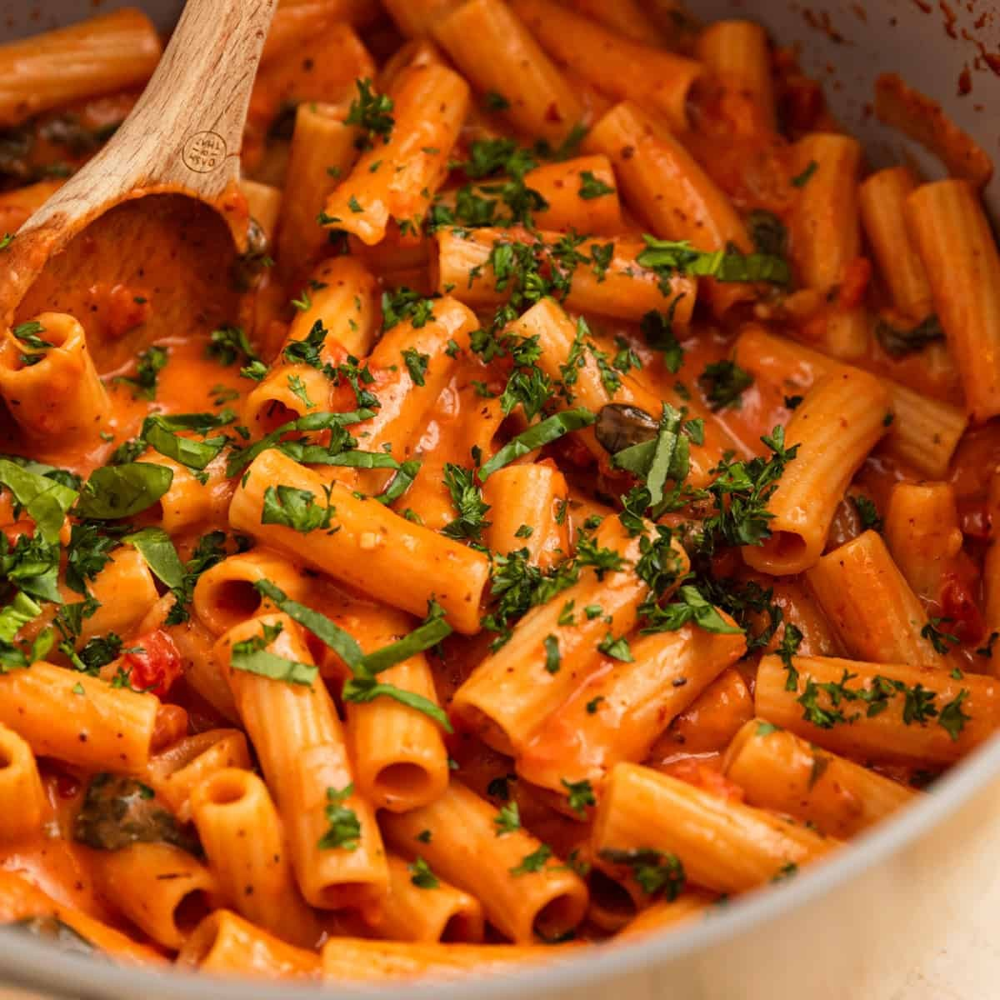
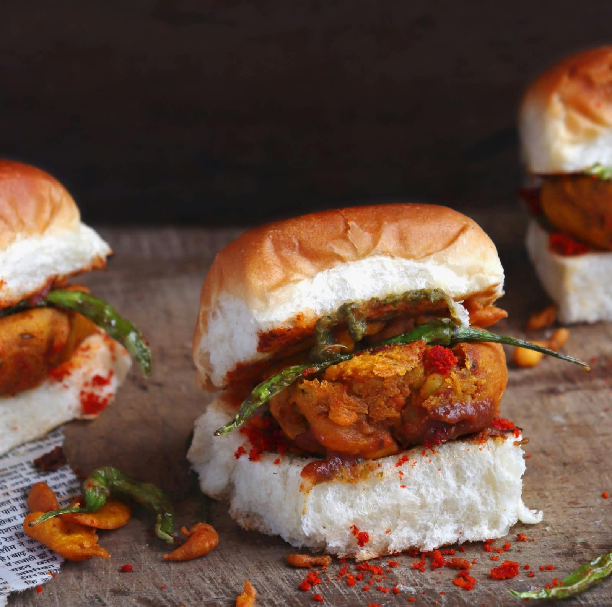
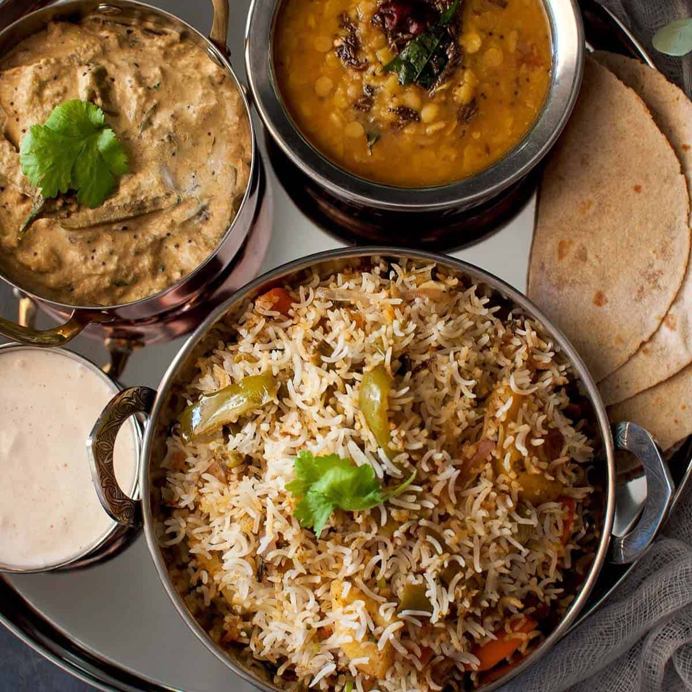
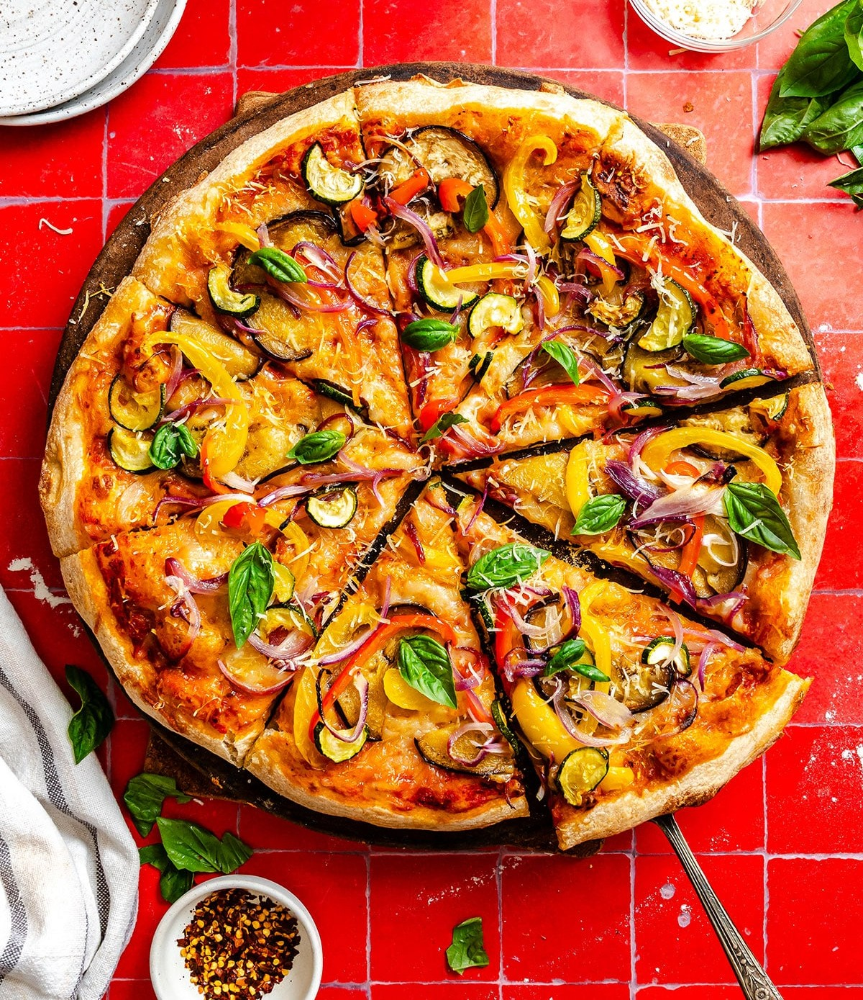
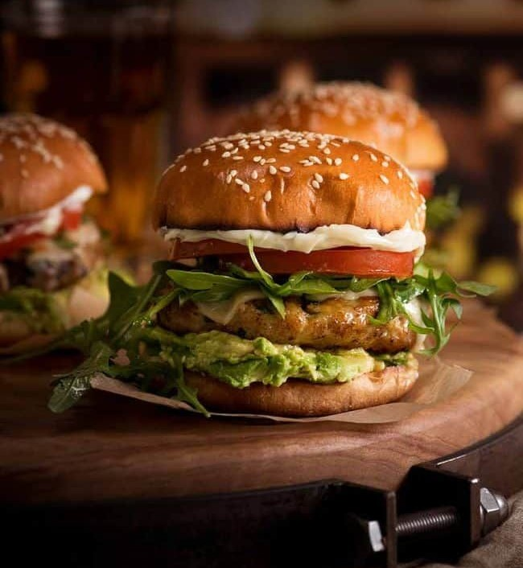
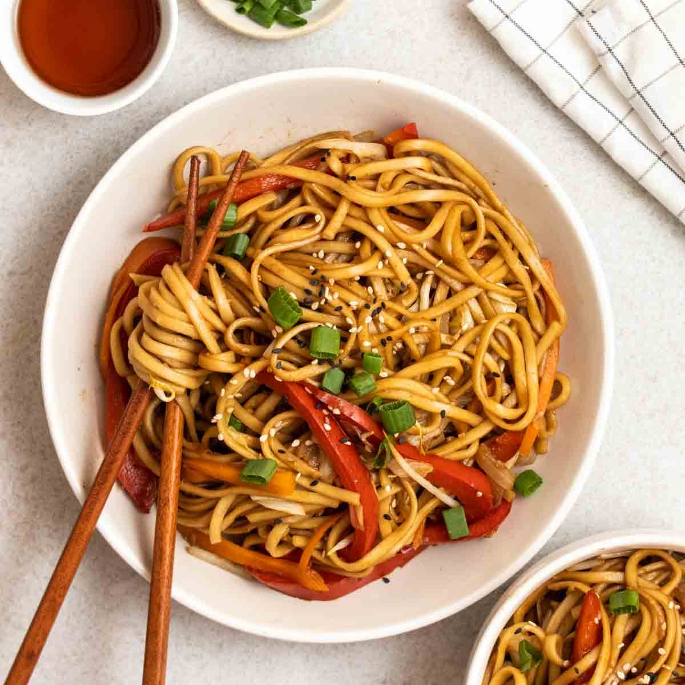

Here are some simple and delicious recipes.

Creamy white sauce pasta made with vegetables, milk and cheese.
Rating: 5/5

A popular Mumbai street food made with spicy potato vada and pav.
Rating: 4/5

Flavourful basmati rice cooked with vegetables and aromatic spices.
Rating: 5/5

Cheesy homemade pizza topped with vegetables and delicious pizza sauce.
Rating: 4/5

A simple homemade burger with a vegetable patty and fresh vegetables.
Rating: 4/5

Tasty vegetable noodles made with noodles, fresh vegetables and simple spices.
Rating: 4/5
What people say about our recipes
The pasta recipe was very easy to follow and tasted delicious.
I really liked the biryani recipe. The instructions were simple.
The recipes are simple and useful for making food at home.